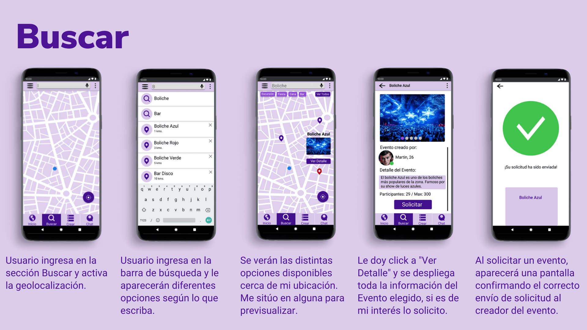
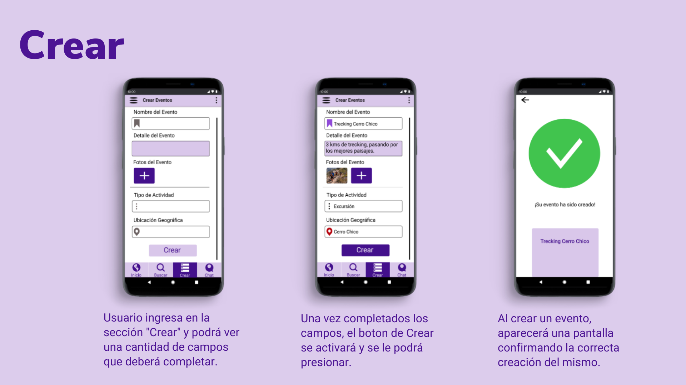
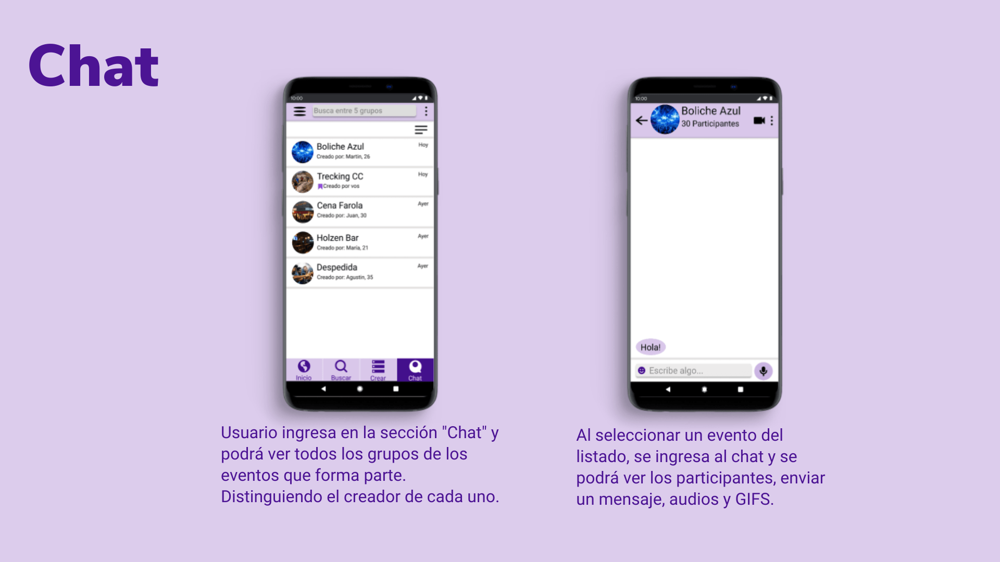

Soluciona varios problemas cotidianos a la vez con una sola herramienta, como lo es buscar qué hacer, crear eventos y conectar a la gente. De esta forma facilitamos la idea de conocer gente viajando, en eventos reales y cercanos mientras realizamos alguna actividad en particular y que no se defina simplemente en que te guste o no una foto de perfil para poder conocer a alguien, como hacen las apps de citas, sino que puedas conocer gente fácil y rápido en un evento de tu interés.
  